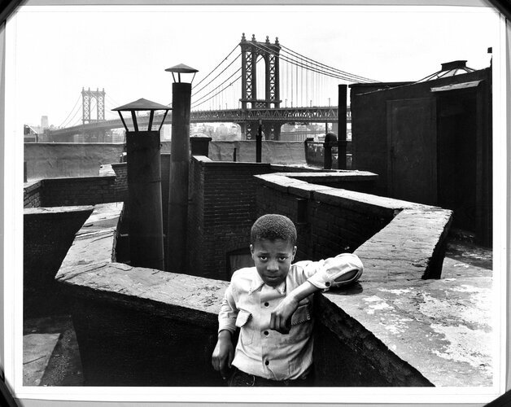

“Boy on Roof” Monroe Street, New York, Walter Rosenblum, 1950, Brooklyn Museum: Photography
© Rosenblum Archive
Size: sheet: 11 × 14 in. (27.9 × 35.6 cm) image: 10 ¾ × 13 ¼ in. (27.3 × 33.7 cm)
Medium: Gelatin silver photographhttps://www.brooklynmuseum.org/opencollection/objects/112121